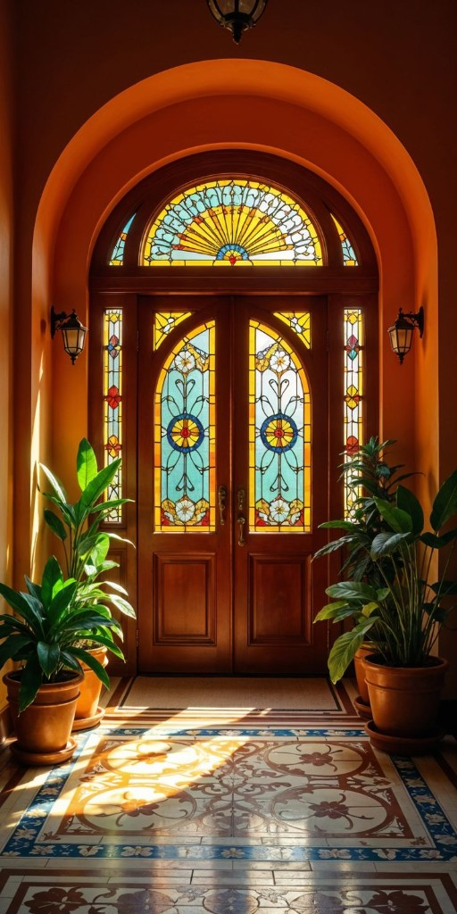
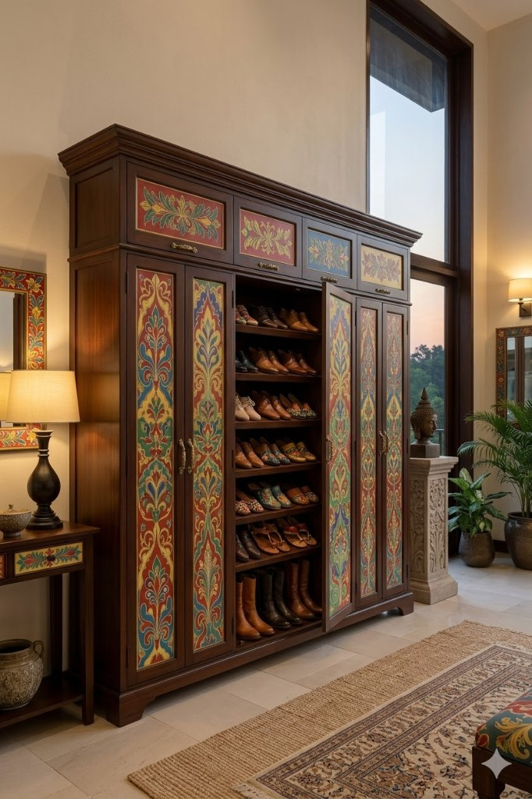
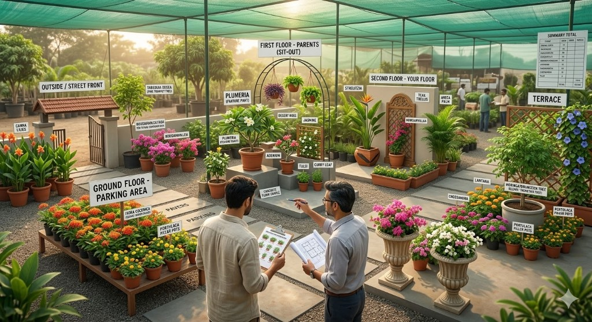
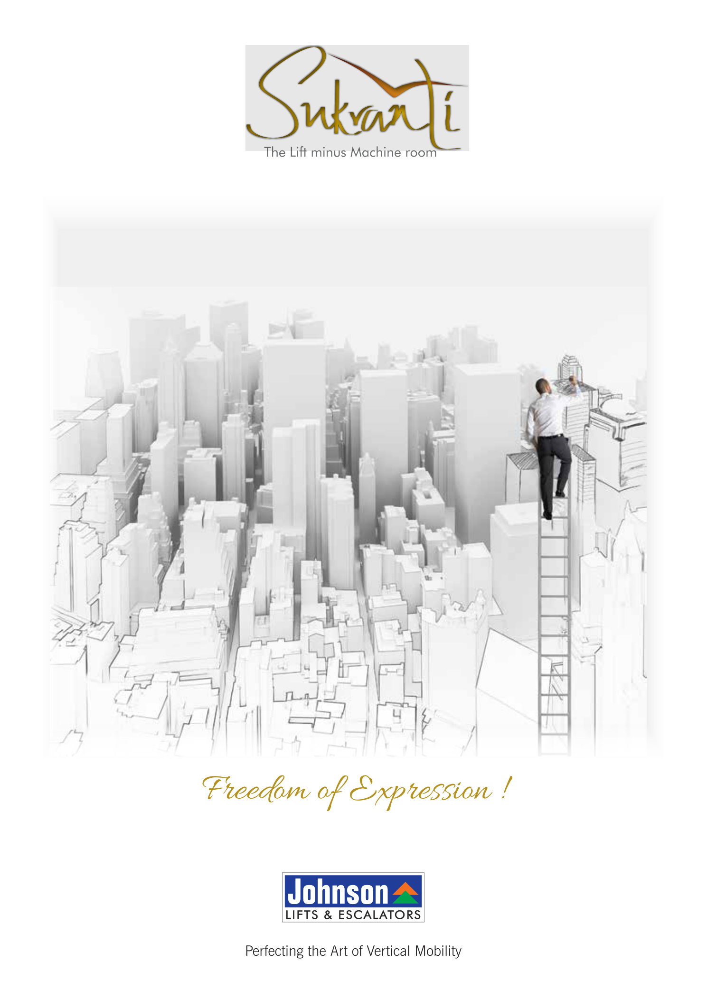
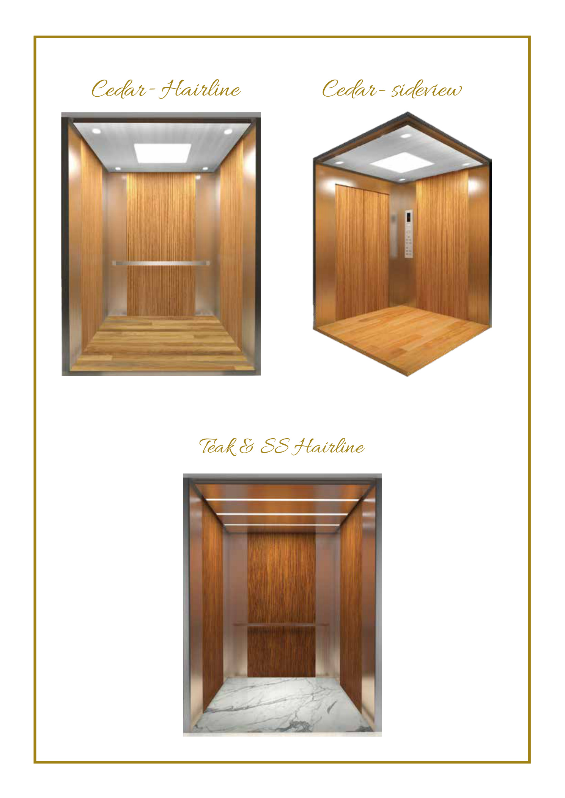
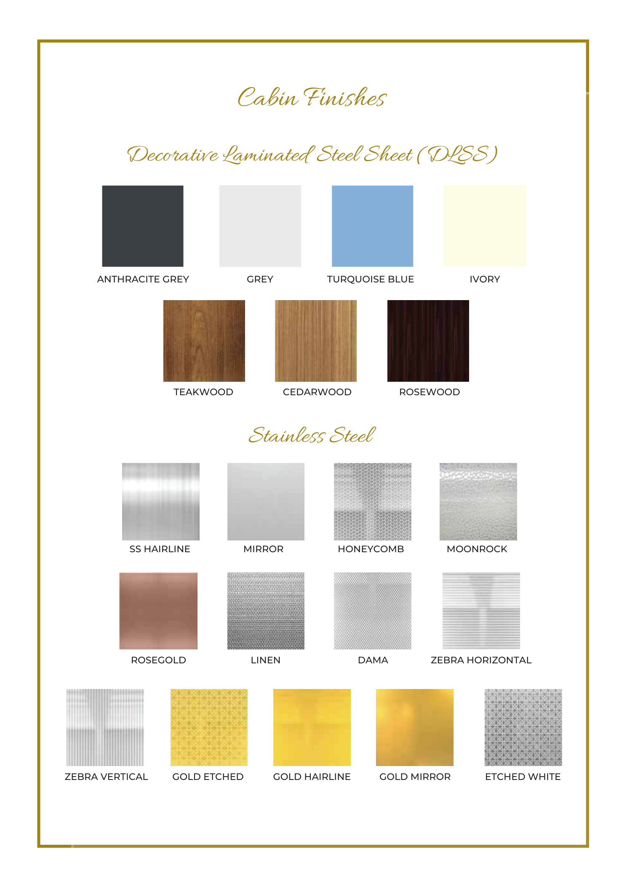
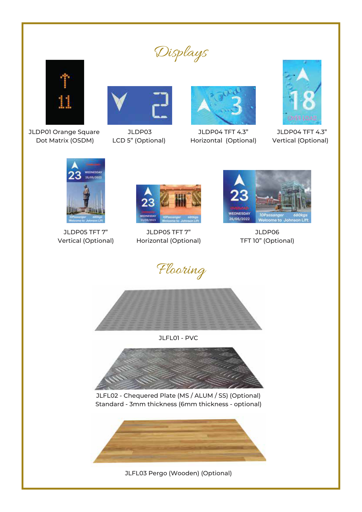

Colour Preferences
Primary Palette — Neo-Heritage Indian
Rust Terracotta
#A56A54
Deep Indigo
#1F2C61
Ochre Gold
#D2A747
Forest Green
#3C6345
Creme Ivory
#F5FDE1
Natural Teak
#9B8646
Rich Oxide Red
#C04030
Material Textures
PatternsTraditional (Athangudi tiles)
FabricsNatural — cotton, jute, linen
WoodHand-carved teak
DecorClay pottery, brass, plants
This is our broad colour direction — Chettinad & eco-heritage inspired. Creme Ivory as the neutral base (lime wash walls), with terracotta, indigo, green, and gold as accents placed strategically. Oxide red for Chettinad tile flooring and accents. The design team can adjust shades but should stay within this warm, earthy, heritage family. No cool greys, no stark whites, no synthetic-feeling colours.
Flooring & Tiles
Ground Floor
Parking AreaTo be discussed
Common AreasTo be discussed
First Floor
Living + DiningTo be discussed
KitchenTo be discussed
BedroomsTo be discussed
BathroomsTo be discussed
Sit-out / BalconyTo be discussed
Second Floor
Master BedroomTo be discussed
Lounge / Screening RoomTo be discussed
Master BathroomBlack Kadappa stone + Zellige tiles
Pooja RoomWhite marble
PatioTo be discussed
Staircase
Staircase TreadsTo be discussed
Staircase RailingTo be discussed
Leaning towards Athangudi tiles or similar handcrafted heritage tiles — open to whatever the interior designer suggests. Avoid generic vitrified tiles. The tile patterns above are the kind of direction we like.
Woodwork & Doors
Primary Wood TypeTo be discussed
Main Entrance DoorCarved teak — heritage style
Internal Doors StyleTo be discussed
Window FramesTo be discussed
Built-in WardrobesTo be discussed
TV Units / ShelvingTo be discussed
Shoe Rack / StorageHeritage-style cabinet (see ref below)
Kitchen CabinetsTo be discussed
Wood FinishTo be discussed


Carved teak is required for all main door and window frames. Internal doors can be simpler but should still feel heritage. No laminate or veneer-only look. We also want stained glass panels in select doors and windows — colourful heritage-style glass work with floral/geometric patterns, similar to Chettinad mansion doors (see left reference). Transom windows (arched glass above doors) are preferred for main entrances and key thresholds. Shoe rack should be a heritage-style painted wood cabinet with hand-painted panels — functional storage that doubles as an art piece (see right reference).
Kitchen
LayoutTo be discussed
Modular or Carpenter-built?To be discussed
Countertop MaterialTo be discussed
BacksplashTo be discussed
Wet Kitchen + Dry Kitchen?To be discussed
Chimney / Hob TypeTo be discussed
Water Purifier ProvisionYes — built-in
Dishwasher ProvisionTo be discussed
Pantry / StorageTo be discussed
Kitchen should be functional with modern fittings but with heritage aesthetics — patterned tile backsplash, brass fixtures where possible.
Bathrooms & Fixtures
General
Preferred BrandsTo be discussed
Western WC in All?To be discussed
Concealed PlumbingTo be discussed
Geyser TypeTo be discussed
First Floor Bathrooms
Wall TilesTo be discussed
Floor TilesTo be discussed
Vanity StyleTo be discussed
Shower TypeTo be discussed
Master Bathroom (2nd Floor)
FloorBlack Kadappa stone
WallsZellige tiles
Bathtub?To be discussed
Rain ShowerTo be discussed
Overall FeelSpa-like, premium
Master bathroom is a priority space. Other bathrooms should be well-designed but can be simpler.
Lighting
ChandeliersTo be discussed
Cove / Concealed LightingTo be discussed
Staircase LightingTo be discussed
Pooja Room LightingTo be discussed
Screening RoomMood / dimmable lighting
Natural Light PriorityLiving, Dining, Sit-outs
Exterior / Facade LightingTo be discussed
Fixture StyleTo be discussed
Lighting is critical to the heritage feel. Open to brass hanging lamps, lantern-style fixtures, and traditional designs. No generic LED downlight-only approach.
Ceiling Treatments
Stained Glass CeilingLiving + Dining area (1st floor)
Other Stained Glass LocationsTo be discussed
False Ceiling — Where?To be discussed
Exposed Wooden BeamsTo be discussed
Double-height SpacesTo be discussed
Ceiling Fans StyleTo be discussed
Stained glass ceiling in living/dining is a must. Other locations open to discussion. Ceiling treatment should complement the heritage aesthetic — no plain gypsum everywhere.
Electrical & Smart Home
Smart SwitchesTo be discussed
Automated CurtainsTo be discussed
Home Theater Pre-wiring2nd floor lounge
Hi-Fi / Speaker Pre-wiring2nd floor lounge
LAN / Internet PointsTo be discussed
USB Charging PointsTo be discussed
EV Charging (Parking)To be discussed
Solar Panel ProvisionTo be discussed
Inverter / Battery BackupTo be discussed
Generator ProvisionTo be discussed
Switch Board StyleTo be discussed
Pre-wiring for all AV and smart home capability is essential even if not installed immediately. Future-proof the electrical layout.
Ventilation & Climate
AC in All Rooms?To be discussed
AC TypeTo be discussed
AC Outdoor Unit PlacementTo be discussed
Cross-ventilation PriorityAll rooms where possible
Ceiling Fan StyleTo be discussed
Exhaust FansTo be discussed
Jali Screens for VentilationYes — key requirement
Chennai climate means cross-ventilation and natural airflow are critical. Jali screens serve both the heritage aesthetic and ventilation purpose. AC provisions should be hidden/integrated, not afterthought split-unit mounting.
Safety & Security
CCTV Camera PointsTo be discussed
Video Door PhoneTo be discussed
Intercom SystemTo be discussed
Window GrillsTo be discussed
Main Gate StyleTo be discussed
Fire SafetyTo be discussed
Lightning ArresterTo be discussed
Terrace Safety RailingTo be discussed
If window grills are needed, they should be designed as heritage-style jali or wrought iron patterns — not standard MS grills. Security should be integrated, not visible as an afterthought.
Plants & Greenery
Outside / Street Front
Tabebuia Rosea (Pink Trumpet Tree)1
Bougainvillea — pink, compound wall2
Canna Lily in terracotta pots (gate entrance)2 pots
Ground Floor — Parking Area
Ixora Coccinea (border along parking)6
Portulaca — ground filler between pots4 pots
First Floor — Parents' Sit-out
Plumeria / Frangipani (large pot)1
Adenium / Desert Rose2
Jasmine on small trellis1
Tradescantia — hanging (ceiling)2 pots
Pothos — hanging (ceiling)2 pots
Tulsi (near kitchen or sit-out)1
Curry Leaf1
Second Floor — My Sit-out
Strelitzia / Bird of Paradise (corner)1
Bougainvillea on teak trellis (wall)1
Areca Palm (floor entrance)1
Portulaca in long planter (railing)3 pots
Lemongrass1
Tulsi1
Terrace
Dwarf Bougainvillea in large urns — pink1
Dwarf Bougainvillea in large urns — white1
Crossandra / Firecracker Flower4
Pentas — pink4
Lantana3
Thunbergia Grandiflora on parapet trellis2
Moringa / Drumstick in large container1
Portulaca — ground filler6 pots

Total Count
Trees1
Large shrubs / feature plants9
Climbers5
Fragrant / kitchen plants4
Hanging pots4
Filler / ground cover pots13
Total Plants36
Infrastructure Needed
Water outlets — all balconies & terraceYes
Drainage provisionsYes
Trellis mounting points (walls)Yes
Ceiling hooks for hanging potsYes — 1st floor sit-out
Drip irrigation / auto-wateringTo be discussed
Plants are a serious part of the design, not decoration. The house should feel green and alive at every level. Everything listed above is available in Chennai — single nursery visit to Vandalur. The architect needs to provision water outlets, drainage, trellis mounting points, and ceiling hooks at all outdoor and semi-outdoor spaces during construction.
Art & Craft Integration
3D Relief MuralsFeature walls — locations TBD
Traditional PaintingsEvery floor — integrated
Peacock MotifsRecurring theme — all floors
Mughal ArchesKey thresholds & doorways
Carved Teak ElementsDoors, windows, frames
Stained GlassCeilings & select windows
Zellige Tile WorkAll bathrooms
Corridor / Entrance ArtYes — not bare walls
Artisan SourcingTo be discussed
Art is a core requirement, not an afterthought. Every surface is an opportunity. The design team should plan art placement as part of the architecture, not leave blank walls for later.
Lift / Elevator
Shaft Size4' × 5'
Floors ServedG to 2nd (provision for 3rd)
BrandJohnson Lifts
ModelSukranti
Cabin FinishTeak Wood & SS Hairline
Door StyleTo be discussed
Display PanelTo be discussed
Lift is required — primarily for parents' convenience. We are planning Johnson Lifts Sukranti model with a Teak Wood + SS Hairline cabin finish to match the heritage aesthetic of the house. ↓ Download full Sukranti brochure (PDF)




Exterior & Facade
Facade StyleNeo-Deccan Heritage
Facade MaterialTo be discussed
Facade ColourTo be discussed
Balcony Railing StyleTo be discussed
Name Board DesignTo be discussed
Main Gate DesignTo be discussed
Compound WallTo be discussed
Exterior LightingTo be discussed
WeatherproofingTo be discussed
The facade is the first impression. It should unmistakably communicate the heritage intent — no generic modern elevation with decorative elements stuck on.
Budget & Timeline
Overall Budget RangeTo be discussed
Construction Start TargetTo be discussed
Expected CompletionTo be discussed
Priority if Budget ConstrainedTo be discussed
Phased Construction?To be discussed
3rd Floor — When?Future — foundation ready now
Budget and timeline to be discussed in person. The intent is to build once and build right — quality of craftsmanship is more important than speed. We are willing to phase certain finishes if needed, but the structure and core design must be complete.